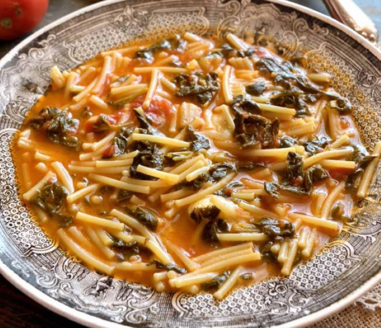
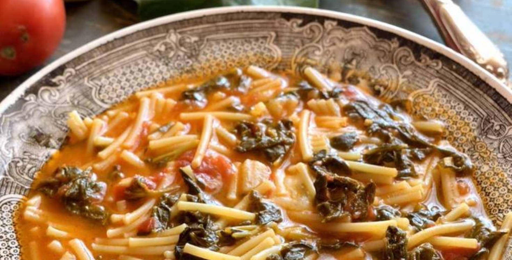

Pasta con i tenerumi:
- 1 mazzetto di tenerumi freschi (circa 8 rametti)
- 400g di pomodori pelati
- 1 spicchio d'aglio
- 2 cucchiai di olio extravergine d'oliva
- Sale fino q.b
- 250g di spaghetti spezzati
- ricotta salata q.b


Procedimento:
- Dovete tagliare le foglie. Qualora ci fossero delle foglie rovinate o bucate non dovrete utilizzarle. Lavate le foglie dei tenerumi sotto acqua fredda corrente così da rimuovere eventuali residui di terra
- Dedicatevi ora alla preparazione del sughetto di pomodoro che aggiungerete alla minestra. In una pentola aggiungete dell’olio extravergine d’oliva e tritate uno spicchio d’aglio, in pezzi più o meno grossolani.
- Fate soffriggere per un minuto circa ed aggiungete quindi la polpa di pomodoro e condite con del sale. Mescolate con un cucchiaio e fate proseguire la cottura fino a quando avrete ottenuto un sughetto più ristretto.
- Mettete a bollire dell’acqua ed aggiungete i tenerumi
- Mescolate così da immergere le verdure nell’acqua calda. Coprite con un coperchio e fate cuocere per circa 10 minuti.
- aggiungere il sale e successivamente la pasta, nel mio caso degli spaghetti tagliati.
- Quando la pasta sarà quasi cotta potete eliminare l’acqua di cottura in eccesso utilizzando un mestolo.
- aggiungete, quindi, il picchi pacchi preparato prima e mescolate così da inglobarlo per bene ed ottenere una pasta e tenerumi ben omogenea.
- Servite la vostra minestra di tenerumi con un filo d’olio extravergine d’oliva e nella sua semplicità questo piatto sarà davvero straordinario!